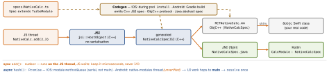

react-native · folio
In one line: A typed TypeScript spec is the contract; Codegen turns it into C++/ObjC++/Java glue; at runtime JS holds a JSI host object and calls straight into C++ and on to Swift/Kotlin — no JSON bridge, sync possible, modules lazy-loaded.
Download PDF Print view LaTeX source


When you need native — and the flow
- Need it for: an API no library covers (HealthKit, a vendor SDK), heavy work off the JS thread (crypto, images), native UI (map, camera), existing Swift/Kotlin code. First try an Expo / community module: your native code is yours to upgrade.
- Flow: spec
Native*.ts(codegen finds it by that prefix) +codegenConfiginpackage.json→ Codegen → implement the generated protocol / abstract class → autolinking registers it → JSTurboModuleRegistry.getEnforcing(throws if absent;get→nullfor optional modules). - iOS: the protocol and the JSI class use C++ types, so the module is ObjC++ (
.mm): returnsstd::make_shared<NativeCalcSpecJSI>(params)fromgetTurboModule:. Swift cannot conform directly — thin ObjC++ shim over an@objcSwift class. Android: Kotlin subclass of the generated spec, exposed by aReactPackage. - Events: typed in the spec —
readonly onKeyAdded: CodegenTypes.EventEmitter<Pair>; native calls the generatedemitOnKeyAdded(…)(from the…SpecBaseclass); JSconst sub = NativeX.onKeyAdded(cb)…sub.remove(). Legacy:NativeEventEmitter+RCTEventEmitter/RCTDeviceEventEmitter. - Fabric UI component: spec
MapViewNativeComponent.tscallscodegenNativeComponent<NativeProps>; props extendViewPropswith codegen types (Double,WithDefault,DirectEventHandler); imperative calls viacodegenNativeCommands. iOS: anRCTViewComponentView(updateProps:oldProps:); Android: aViewManager. Yoga lays out in C++; mounting on main.
Example — TS spec · Expo Module in Swift
import type { TurboModule } from 'react-native';
import { TurboModuleRegistry } from 'react-native';
export interface Spec extends TurboModule {
add(a: number, b: number): number; // sync: JS thread
hash(input: string): Promise<string>; // async: queue
}
export default
TurboModuleRegistry.getEnforcing<Spec>('NativeCalc');import ExpoModulesCore
public class CalcModule: Module { // no ObjC++, no codegen
public func definition() -> ModuleDefinition {
Name("Calc")
Function("add") { (a: Double, b: Double) in a + b }
AsyncFunction("hash") { (s: String) async -> String in
await Hasher.sha256(s) }
Events("onProgress") // sendEvent("onProgress", [...])
} } // JS: requireNativeModule('Calc')Expo Modules API · legacy · linking
- Expo Modules — Swift/Kotlin DSL (
Name,Function,AsyncFunction,Events,View+Prop), JSI underneath, works in bare RN too (needsexpo-modules-core). Scaffold:npx create-expo-module. Usually the simplest path for app code. Raw TurboModule when you want zero Expo deps or shared C++ modules. - Legacy:
RCT_EXPORT_MODULE/RCT_EXPORT_METHOD(Swift viaRCT_EXTERN_MODULE), Android@ReactMethod, JSNativeModules.X. New Arch default since 0.76; an interop layer keeps old modules running untyped — migrate, don’t rely. - Autolinking: CLI reads each dependency’s podspec / Gradle; Podfile
use_native_modules!(Expo:use_expo_modules!); library podspecinstall_modules_dependencies(s). Native change ⇒pod install+ rebuild — Metro reload never loads native code. - Types:
number→double, object →NSDictionary/ReadableMap, array →NSArray/ReadableArray,Promise→ resolve/reject. - Test:
jest.mockthe spec — JS tests never touch native; XCTest/JUnit on a plain Swift/Kotlin core (keep glue thin); Detox/Maestro on the example app (npx create-react-native-libraryscaffolds one). - Version: the spec is an ABI. Changing it needs a store build; semver-major for breaking spec changes;
peerDependenciesonreact-native.
Traps
- Sync method doing disk/network → JS frozen, frames dropped.
- UIKit touched from an async method: it is not on main.
- Promise resolved twice, or never (a hung
await). - OTA JS calls a method the binary lacks → crash (runtime version).
- “could not be found” = not linked / not rebuilt, not a JS bug.
- Swift conforms to a TurboModule spec only via an ObjC++ shim.
Remember
Spec = contract · Codegen = glue · JSI = direct call · sync blocks JS · async ≠ main.